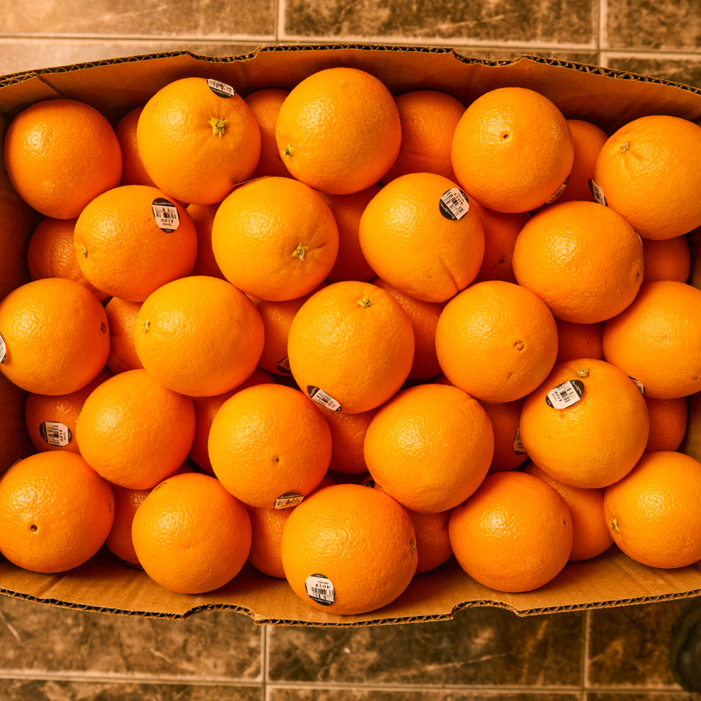
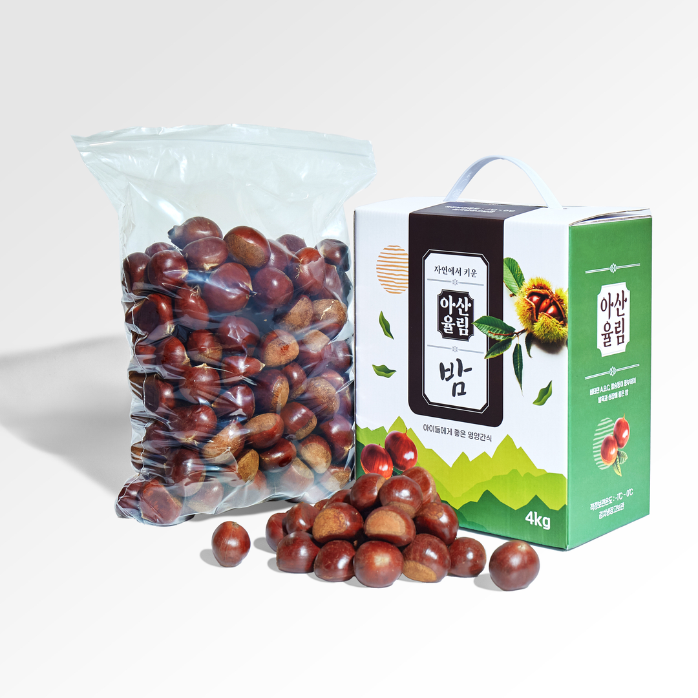
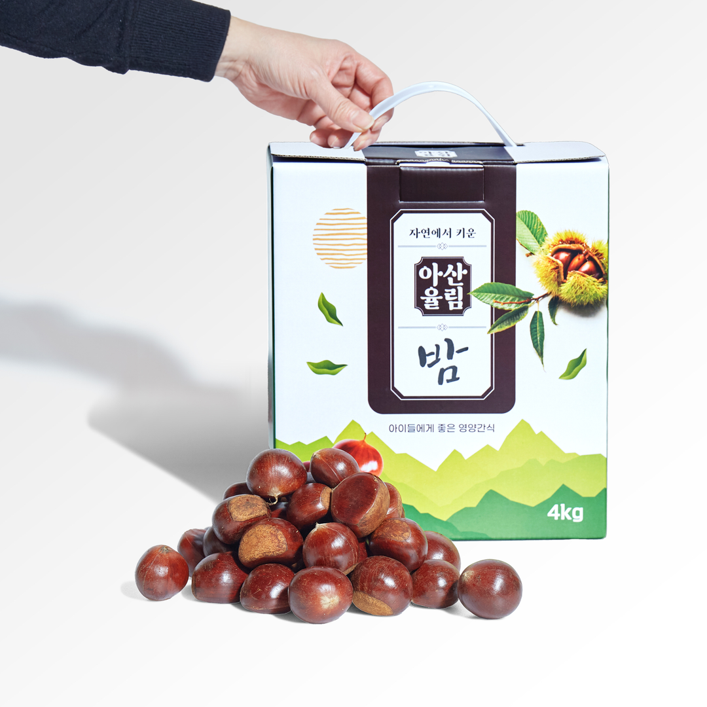
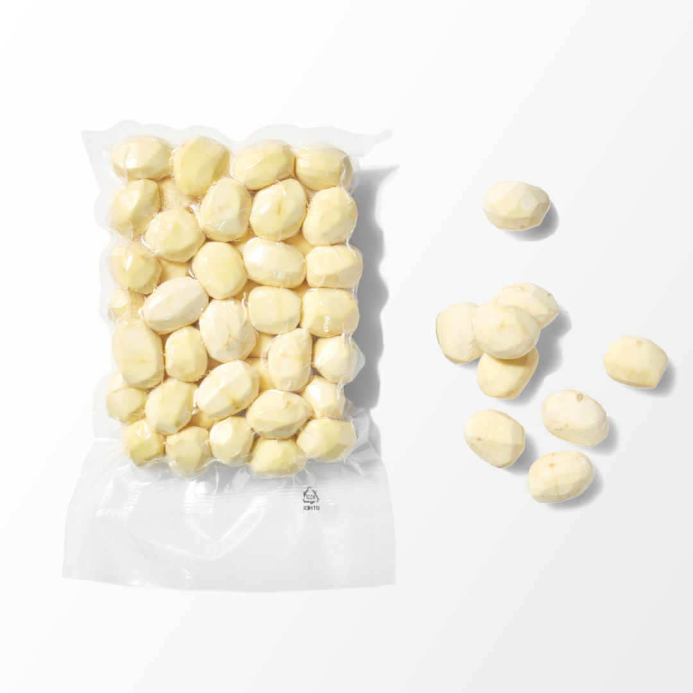
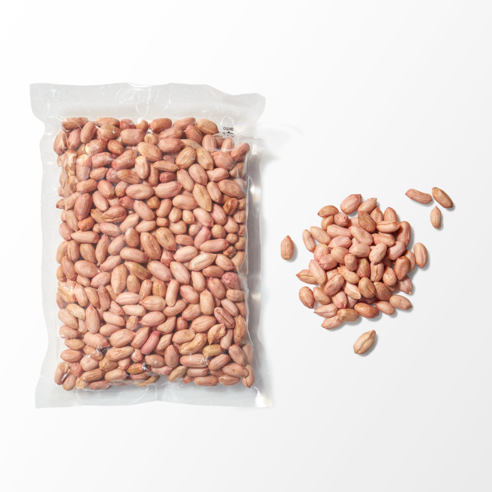

Chili pepper powder

Sajasan Farming Association Corporation is a village enterprise operated in Sajasan Village, Cheongyang-gun, Chungcheongnam-do.
By obtaining the FSSC22000 (HACCP) international certification, we process, distribute, and sell 100% Korean agricultural products that coexist with local farmers.


At Sajasan Village, we are committed to expanding our reach globally, with plans to export our high-quality products to the United States, Vietnam, China, Europe, Malaysia, and beyond. Through strong partnerships and a focus on excellence, we aim to bring the best of Cheongyang's agricultural products to markets around the world.

Chili pepper powder

Seaweed Snack 'Gim'

Dried goji berries

Roasted Liriope roots

goji berries Hangwa

Shiitake Mushrooms
Sajasan Village works in cooperation with local farmers in Cheongyang to export high-quality 100% Korean agricultural products. Our goal is to introduce the excellent agricultural products of Cheongyang to the world and provide healthy, natural products. Below are the key export products we take pride in.
Sajasan Village exports these products to various countries around the world while growing together with local farmers. All of our products are carefully quality-controlled and guarantee safety, offering reliable quality to our customers. Discover Sajasan Village's products in diverse export markets.